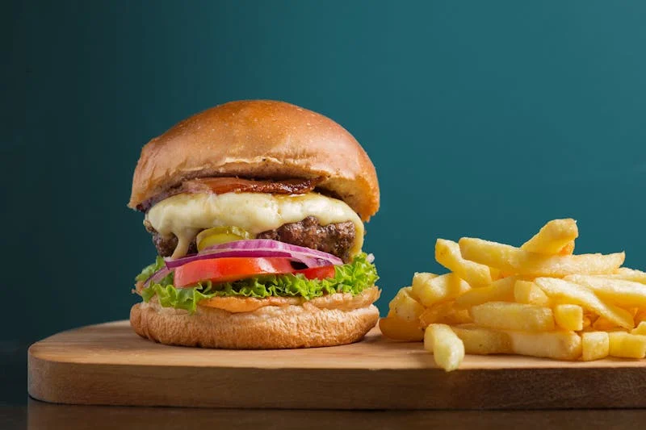
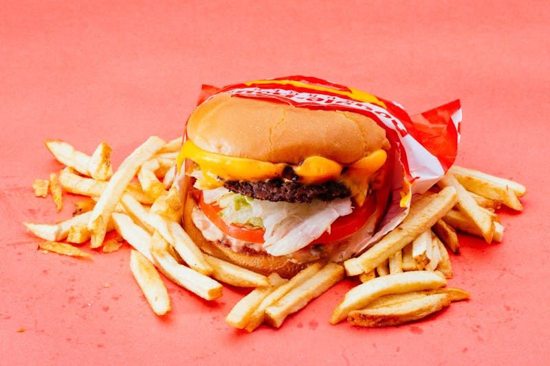
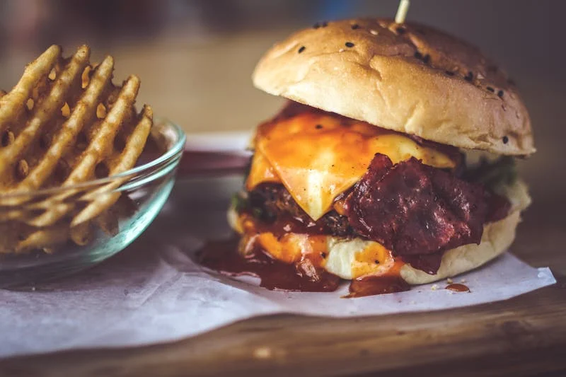
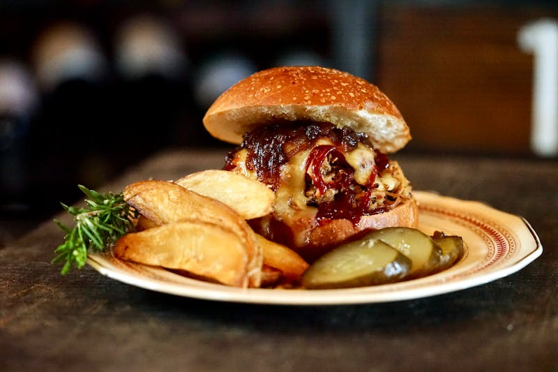

Welcome
This Website is a Premier Source
A cheeseburger is a hamburger with a slice of melted cheese on top of the meat patty, added near the end of the cooking time.
Sing Up
History
Wendys
Near Me
Best of the Best

Amazing Sauces

Real Beef

Large Portions

One lbs Patties
By the late 19th century, the vast grasslands of the Great Plains had been opened up for cattle ranching. This made it possible for many Americans to consume beef almost daily. The hamburger remains as one of the cheapest forms of beef in America.
Josh Ozersky,
The Hamburger: The History
Con 4